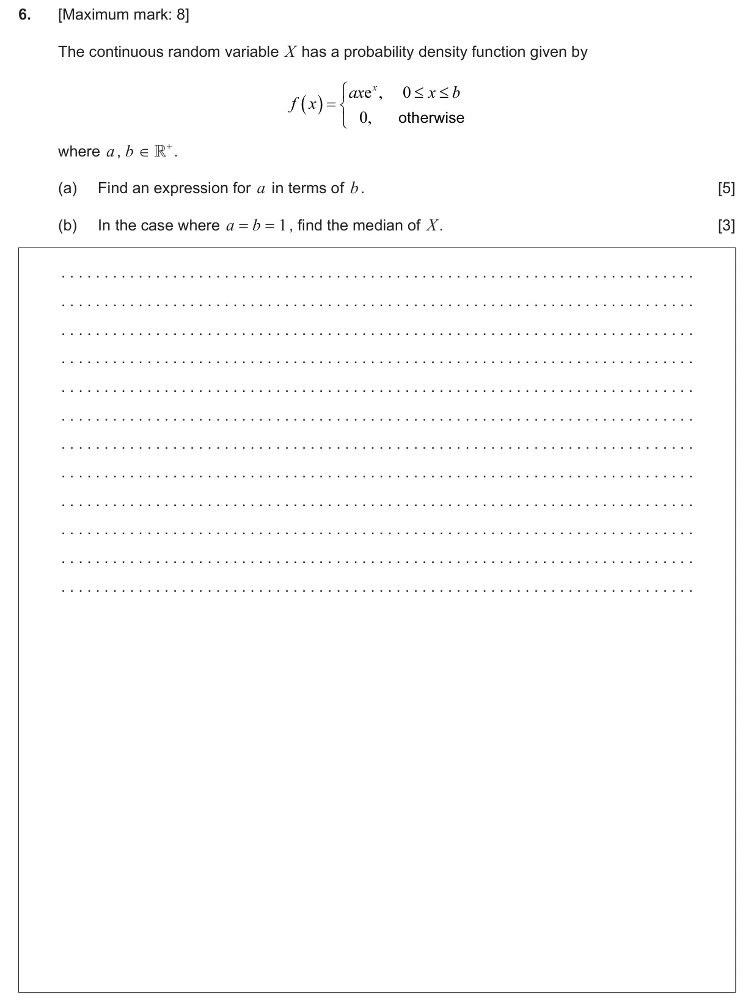
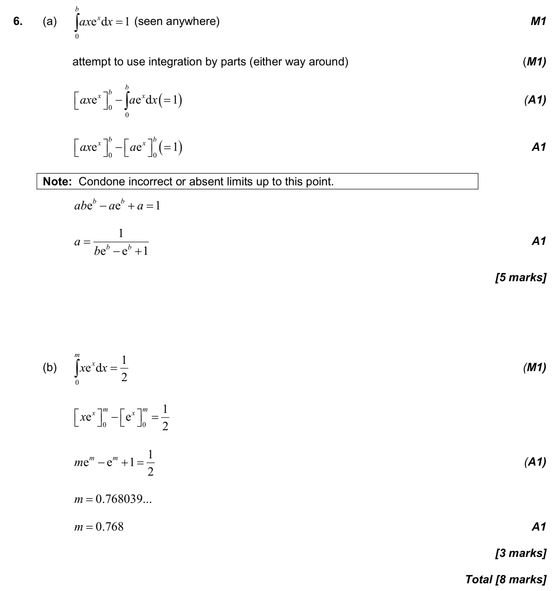

4.14 Discrete and continuous random variables: pdfs, mean, variance, median and mode5.16 Integration by substitution and by parts
Question

Markscheme

8 marks - Nov P2 TZ0 - Section A - Mathematics: Analysis and Approaches HL

